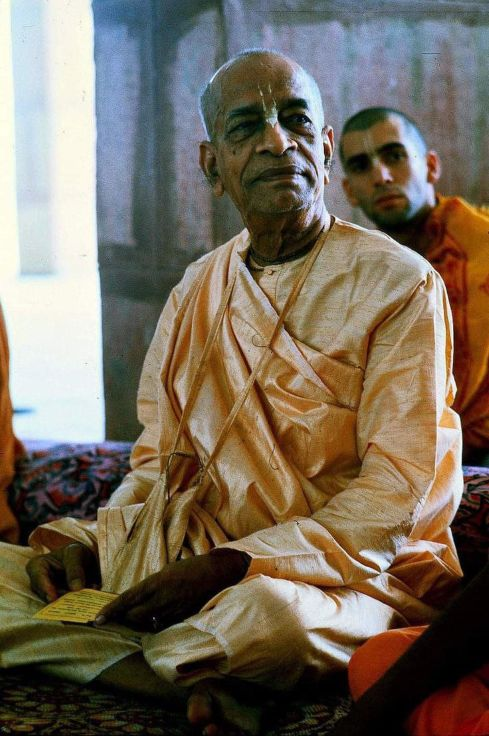

"I shall remain your personal guidance, physically present or not physically."

In the final year when Srila Prabhupada was still physically present with us here in this material world but had become physically incapacitated my glorious godbrother, His Holiness Gargamuni Swami wrote the following to Srila Prabhupada,
"We fervently pray that Your Divine Grace continue to remain in this world because we need your personal guidance. Even when Lord Krishna disappeared, Arjuna lost all strength temporarily."
On 14 July 1977 Srila Prabhupada wonderfully replied, "I shall remain your personal guidance, physically present or not physically, as I am getting personal guidance from my Guru Maharaja."
This is such a great relief for me to know that my beloved spiritual master is always with me and is always guiding me and blessing me how to properly engage in Krishna's service. All I have to do is always remember him and remain in a submissive, inquiring mood
~ Sri Sankarshan Das Adhikari, June 16, 2021